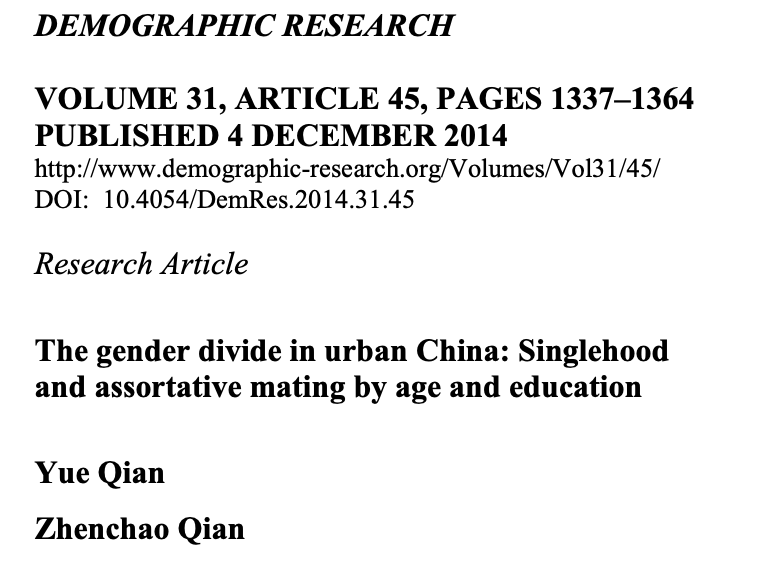
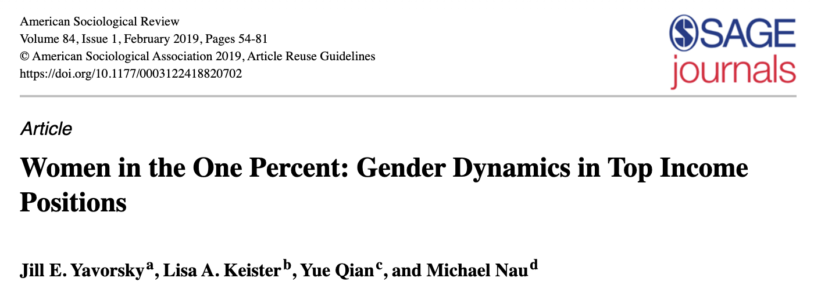
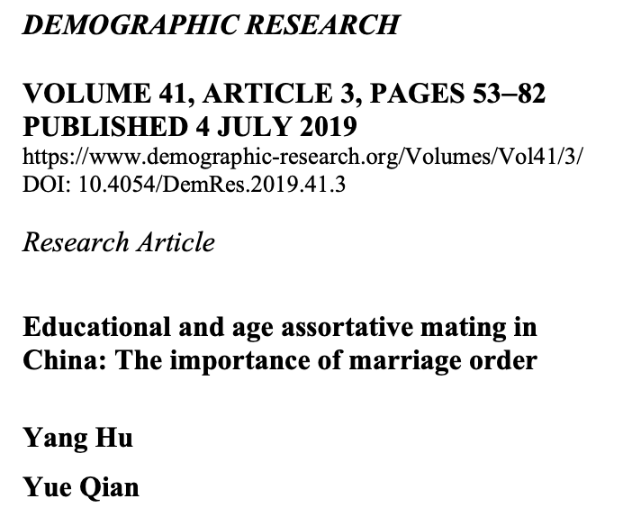
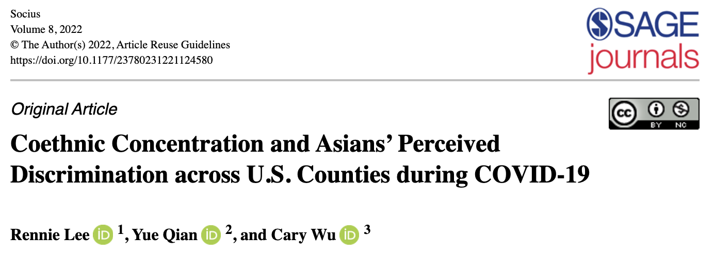
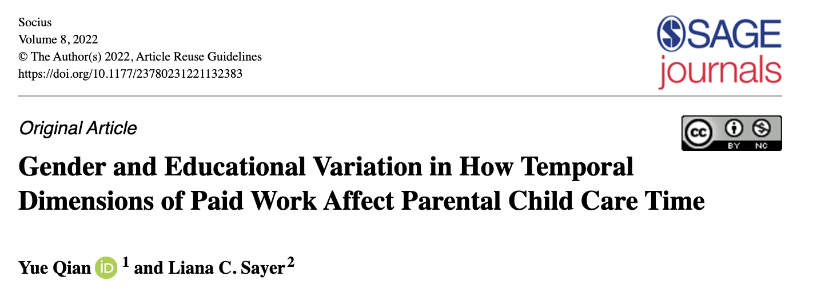
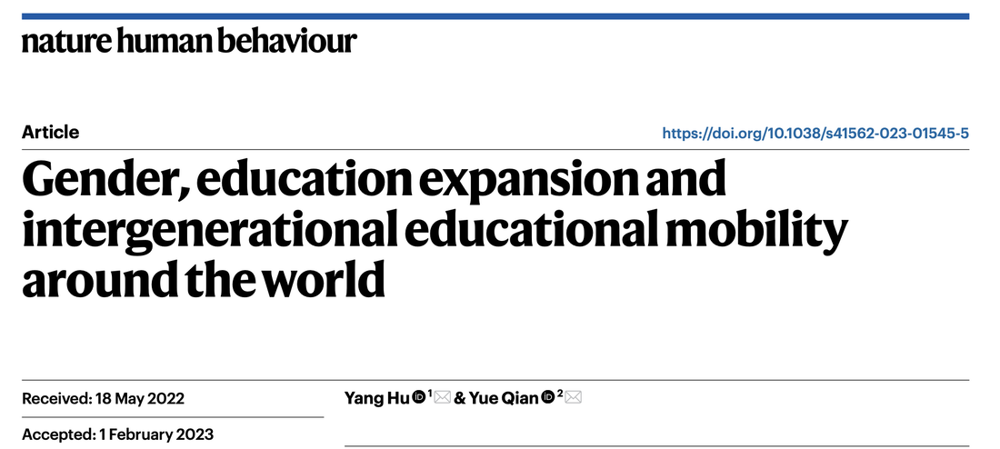
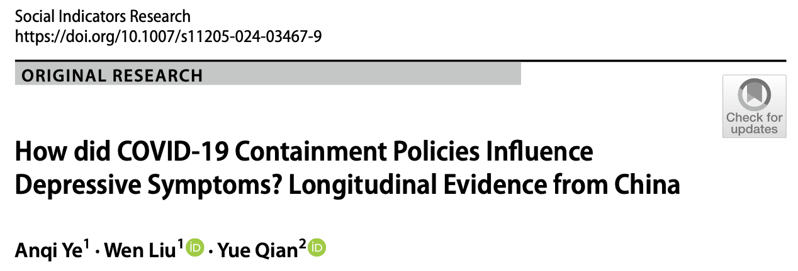
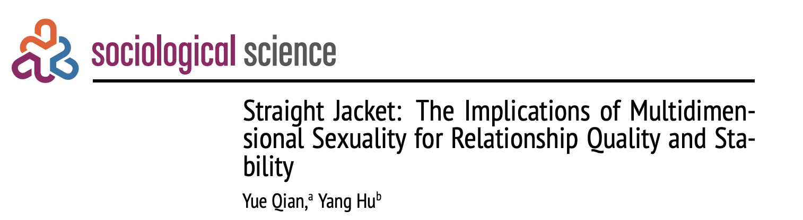

The Resurgence of State-Sector Employment? The COVID-19 Pandemic and Chinese Workers’ Shifting Job Satisfaction
Work and Occupations, 07308884261476223
Research
I study how relationships, work, and social change shape unequal opportunities and well-being. My research spans North America and East Asia, with growing attention to how digital technologies transform social life.
Publications are listed newest first within each theme. Each work appears once, under its primary research question. Chapters, reprints, and other scholarly work are labeled separately.
01
How gender and family arrangements shape employment, careers, and access to economic advantage.
Work and Occupations, 07308884261476223
Gender, Work & Organization 33 (1), 181-201
Journal of Marriage and Family 85 (5), 1138-1152
Social Forces 102 (2), 609-632
Socius 8, 23780231221132383
Canadian Ethnic Studies 54 (3), 63-108
Social Forces 100 (4), 1642-1670
Gender, Work & Organization 28, 535-553
Gender & society 35 (2), 206-217
Sociology compass 15 (6), e12881
Social Forces 100 (2), 564-598
Canadian public policy 46 (S2), S89-S101
Contexts 19 (1), 12-17
China Review 20 (2), 19-51
Research in Social Stratification and Mobility 68, 100522
American Sociological Review 84 (1), 54-81
The Sociological Quarterly 57 (4), 733-758
OSF
Working paper
Working in America: Continuity, Conflict, and Change in a New Economic Era
Book chapter / reprint
Globe & Mail (Toronto, Canada), A11-A11
Op-ed
02
How people form relationships, and how partner selection and changing family arrangements reflect and reproduce inequality.
Demographic Research
Journal of Marriage and Family 88 (2), 522-536
人口研究 [Population Research] 50 (4), 41-55
Journal of Marriage and Family 87 (1), 392-407
Sociological Science 12, 51-75
Journal of Social and Personal Relationships 42 (8), 2167-2187
Demography 62 (4), 1203-1216
The Social Science Journal 61 (4), 755-772
Journal of Family Issues 45 (5), 1087-1115
Demographic Research 48, 483-512
Canadian Review of Sociology/Revue canadienne de sociologie 60 (1), 130-153
Journal of Family Theory & Review 15 (3), 526-541
Marriage & Family Review 58 (7), 647-673
Studies in family planning 53 (1), 23-42
Internet Research 32 (4), 1264-1287
Chinese Sociological Review 54 (3), 304-331
Population, Space and Place 28(4), e2524
Journal of Ethnic and Migration Studies 46 (14), 2880-2895
Journal of Ethnic and Migration Studies 46 (18), 3920-3936
Chinese journal of sociology 6 (4), 521-546
Studies in Family Planning 51 (3), 273-291
Demographic Research 41, 53-82
Journal of Marriage and Family 80 (3), 607-621
Research in social stratification and mobility 56, 12-20
Journal of Family and Economic Issues 39 (4), 551-565
Chinese Sociological Review 50 (3), 275-309
Chinese Sociological Review 49 (3), 239-262
Journal of Marriage and Family 79 (2), 318-336
Demographic Research 31, 1337-1364
Chinese Journal of Sociology, 2057150X261468815
Editorial
Fertility and Childcare in East Asia: Gender Dynamics and Intergenerational …
Book chapter / reprint
Journal of Chinese Women’s Studies 160, 21–22 (in Chinese)
Commentary
Intimate Relationships and Social Change (Contemporary Perspectives in Family Research, Vol. 11), 95–123
Book chapter / reprint
The Ohio State University
Doctoral dissertation
The Ohio State University
Master’s thesis
03
How digital technologies reshape relationships, family practices, and social inequalities.
European Sociological Review, jcag002
Information, Communication & Society 29 (10), 3097-3115
Community, Work & Family 27 (5), 588-611
Journal of Marriage and Family 86 (5), 1160-1183
04
How work, family relationships, discrimination, and social disruption shape health and well-being.
ILR Review 79 (2), 310-332
Journal of Current Chinese Affairs 55 (1), 100-125
Journal of Ethnic and Migration Studies, 1-21
Social Indicators Research 180 (1), 1-21
Migration, Mobility, & Displacement 7 (1), 29-44
Canadian Ethnic Studies 56 (2), 157-176
Proceedings of the National Academy of Sciences 121 (21), e2322920121
The British Journal of Sociology 75 (1), 38-47
Nature Human Behaviour 7 (4), 583-595
Journal of Happiness Studies 24 (6), 2039-2059
Journal of American College Health 71 (3), 930-941
Society and Mental Health 13 (3), 208-226
Sociology 56 (4), 800-810
Socius 8, 23780231221124580
Asian Population Studies 18 (1), 24-40
SSM-Qualitative Research in Health 2, 100095
Discover Mental Health 2 (1), 17
Frontiers in public health 10, 937179
Ethnic and Racial Studies 44 (5), 819-835
China CDC Weekly 3 (30), 645
Journal of Adolescent Health 69 (1), 26-32
Frontiers in Sociology 6, 714626
Chinese Sociological Review 53 (1), 55-86
Journal of Health and Social Behavior 62 (4), 562-581
Canadian Diversity 17(3), 60–64
Journal of Happiness Studies 20 (7), 2077-2099
Social Science & Medicine 235, 112365
Demographic Research 38, 1155-1188
Social Science & Medicine 183, 130-141
Journal of Marriage and Family 78 (2), 383-400
Social Science Research 49, 53-69
Journal of Family Issues 36(10), 1351–1376
Social Indicators Research 121, 61–74
人口与发展, 72-83
Routledge International Handbook of the COVID-19 Pandemic in China, 20
Book chapter / reprint
Routledge International Handbook of the COVID-19 Pandemic in China, 31-49
Book chapter / reprint
Routledge International Handbook of the COVID-19 Pandemic in China
Book chapter / reprint
Nature Human Behaviour 7 (4), 482-483
Research briefing
BMJ 376, o256
Opinion
Rapid summary of results 1
Research report
Research resources
Data sources used in my research, with related publications and links to replication materials.
Stata syntax, documentation, and replication resources for selected publications.







